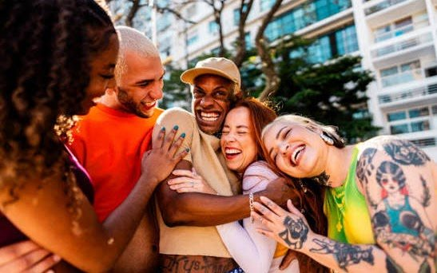

01
How do different kinds of support shape growth?
Social support is well established as protective against stigma and marginalization, but this work has developed largely apart from the broader science of close relationships. My research bridges the two, asking not just whether people have support, but what kind, and what it’s for.
Drawing from the Thriving Through Relationships model, I carefully distinguish between two functions support can serve: source-of-strength (SOS) support — reactive support like comfort after discrimination — which helps people cope with and recover from adversity, and relational-catalyst (RC) support — proactive support like mentorship or encouragement — which helps people pursue goals and capitalize on opportunities. In a large study of sexually- and gender-diverse (SGD) young adults (N = 400), these two forms of support predicted distinct outcomes: RC support predicted greater personal growth and identity pride, while SOS support predicted greater self-integrity and felt security (Baron, Collins, & Feeney, 2026). Thriving, in other words, takes more than the absence of threat — it takes relationships that actively affirm growth and identity.
This distinction is especially consequential in young adulthood, when people are solidifying their sense of self and shifting who they lean on for support, often from parents toward peers and partners. For SGD young adults, that shift can be complicated if parental support, especially identity-affirming support, is inconsistent or absent. I laid out a broader theoretical model of these dynamics in a recent review (Baron & Collins, 2025), showing how identity-specific stressors and opportunities shape perceived support and social safety, and in turn, long-term thriving. While developed with SGD populations in mind, the model’s core mechanisms generalize to other marginalized groups navigating identity-related stress and growth.